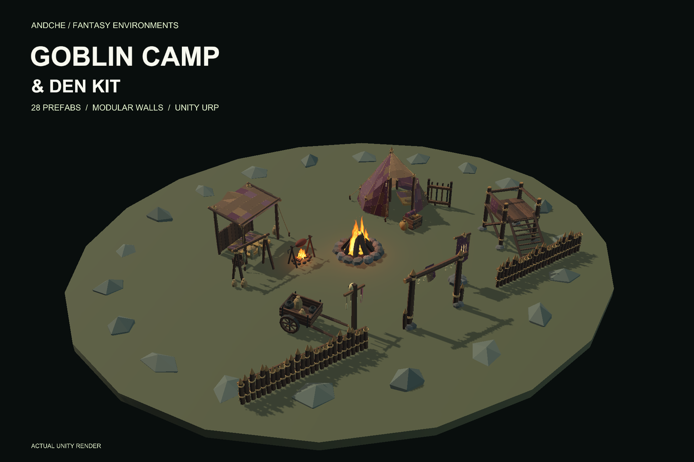
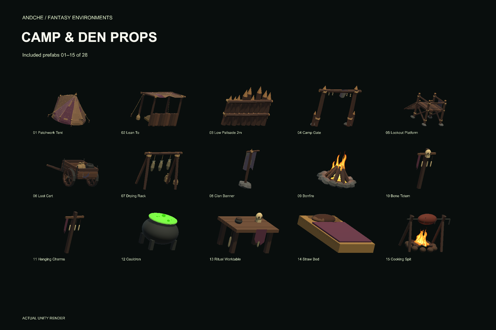
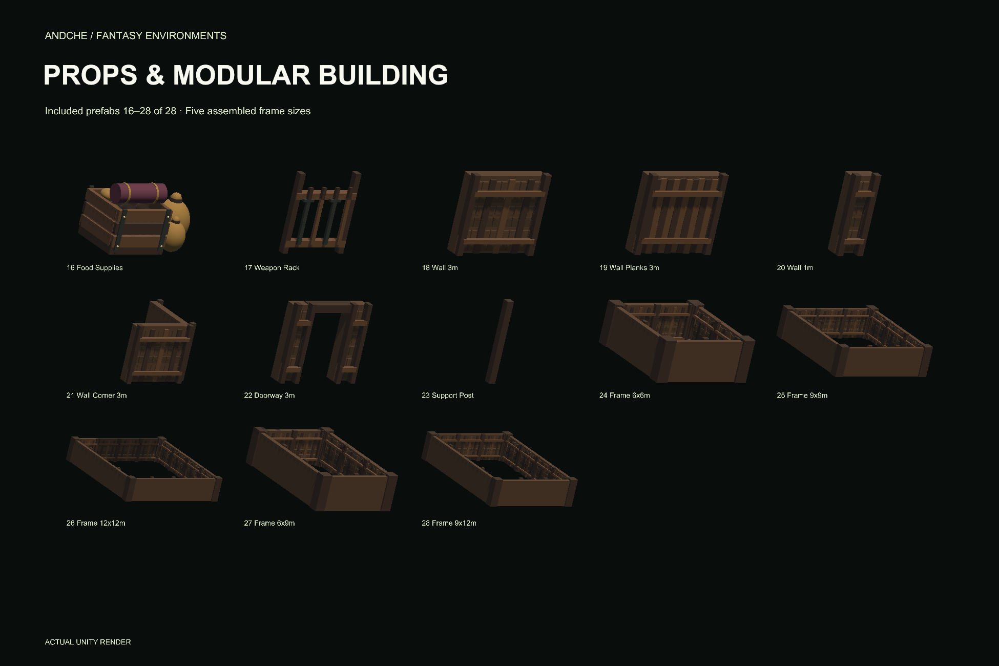
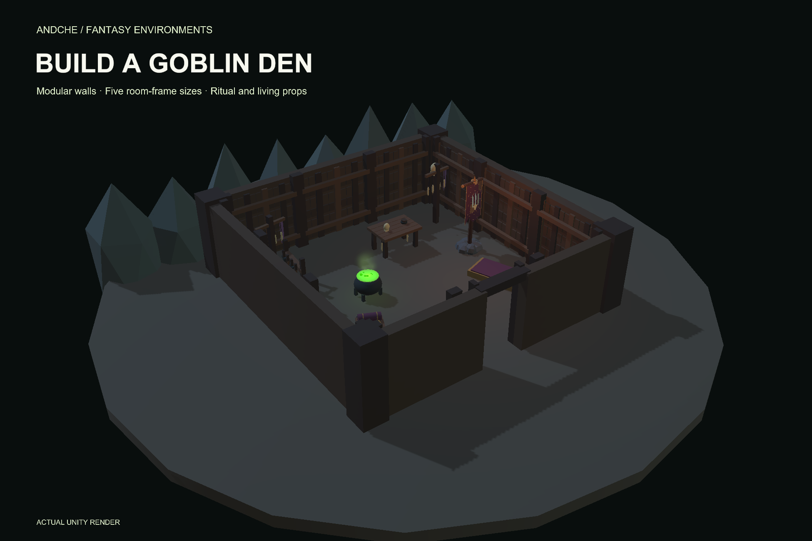
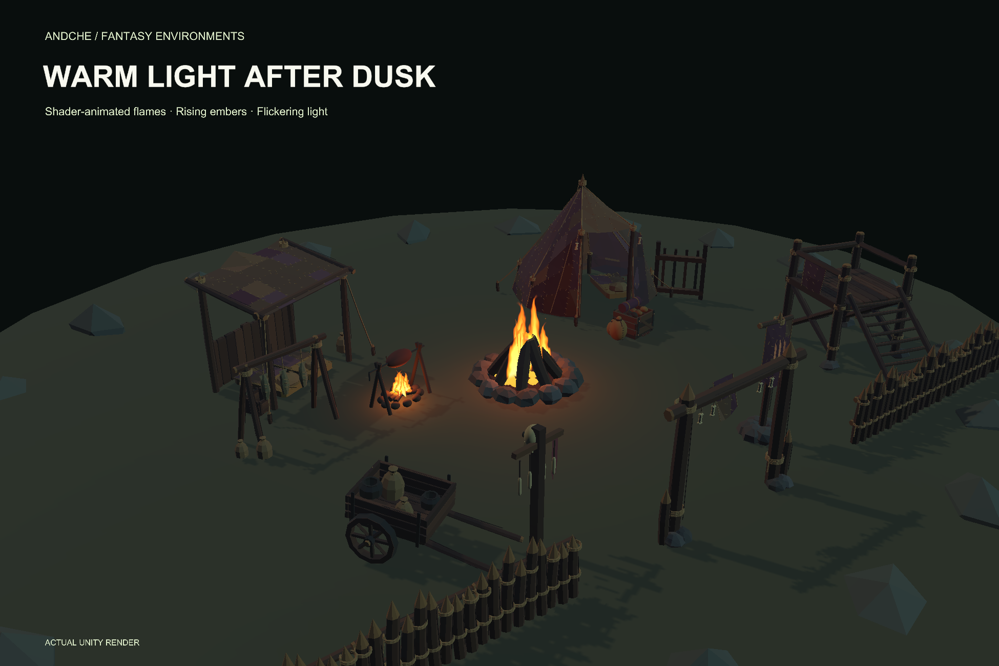
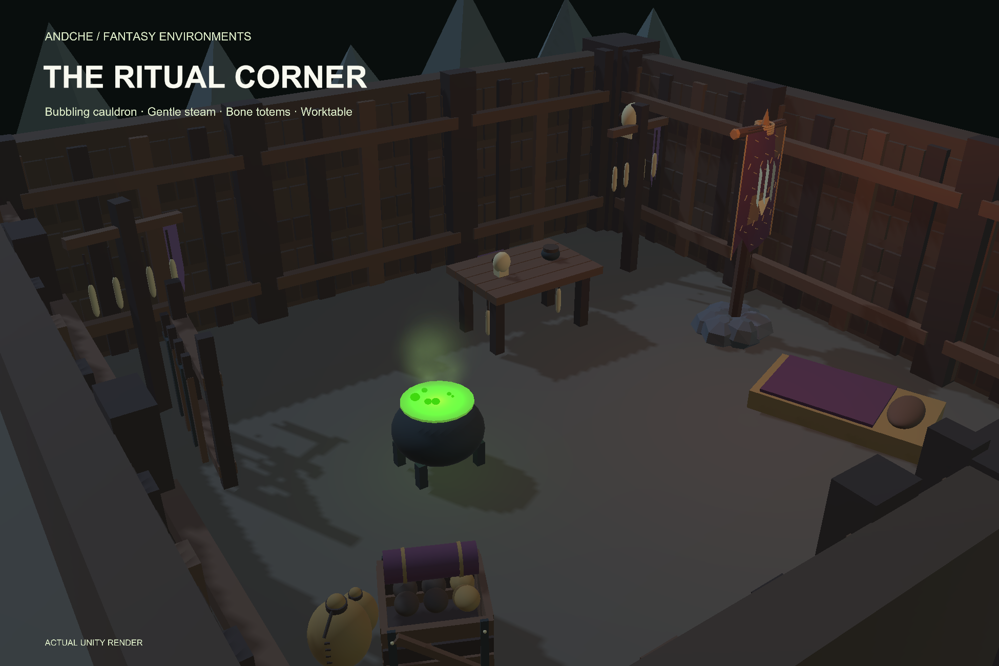
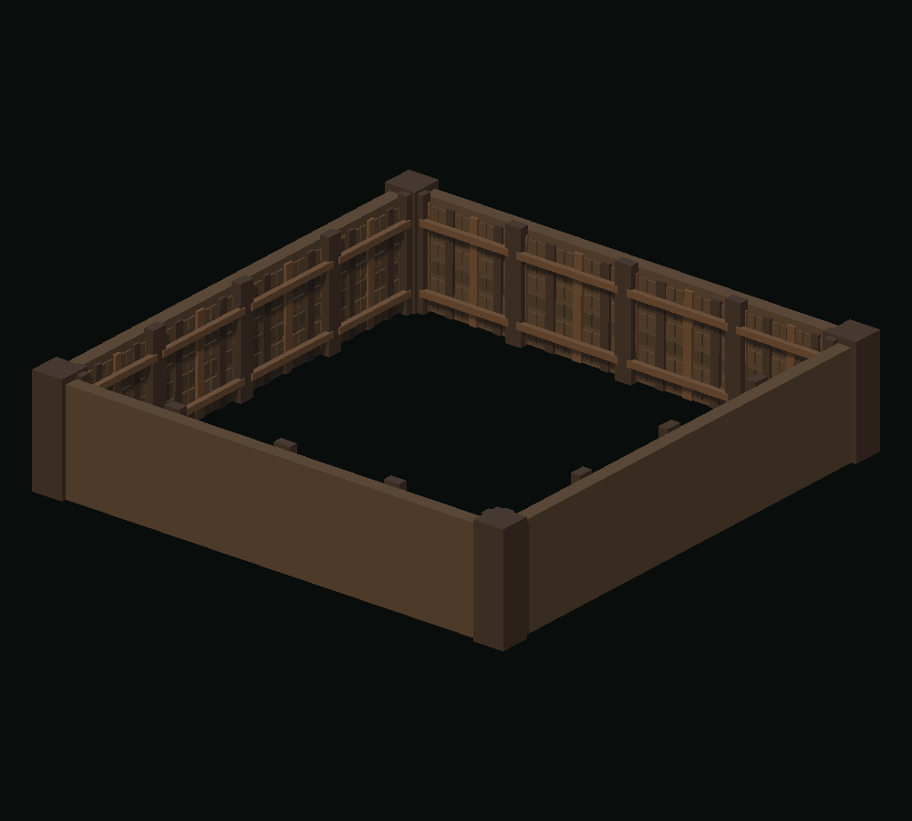

Fantasy environment kit / Unity URP
Low Poly Goblin Camp
& Den Kit
Build a goblin camp above ground and a timber den below. Patched shelters, spiked defenses, ritual props and warm fire effects form a matching set for fantasy RPG encounters and dungeon hideouts.
Submitted for review · planned price $14.99 USD before taxes
Not available to purchase yet. Submitted to Unity Asset Store and awaiting review as of 18 October 2026. No release date is confirmed.

Everything in the kit
28 prefabs, with the contents made clear.
23 individual props and building modules plus five assembled room-frame size variations. The room frames use the included wall style; they are size variations rather than five additional unique model themes.
Outdoor camp · 9 prefabs
Patchwork tent, lean-to shelter, 2m low palisade, fixed-open camp gate, lookout platform, static loaded loot cart, drying rack, clan banner and bonfire.
Den props · 8 prefabs
Bone totem, hanging charms, cauldron, ritual worktable, straw bed, cooking spit, food supplies and weapon rack.
Modular building · 6 prefabs
3m wall, 3m plank wall, 1m wall, 3m corner, doorway and support post. Place the parts at metric scale and adapt the layout to your scene.
Room frames · 5 sizes
6×6, 9×9, 12×12, 6×9 and 9×12m nominal sizes. Each is closed, floorless and roofless, with separate wall sections and solid corner posts.
Inspect all pieces and the demos
Select any image for its full-size view. Catalog tiles use different display scales; the overview scene shows actual scale.












From a campfire encounter to a hidden den.
Three scenes to start from
- GoblinCampDemo: a furnished outdoor camp with daylight lighting.
- GoblinDenDemo: timber architecture, a clear doorway and ritual/living props.
- PrefabOverview: all 28 main prefabs at actual scale.
Shader-animated flames, rising embers and flickering point lights bring warmth to the camp. The cauldron adds six moving bubbles and gentle steam. These are visual effects rather than gameplay systems.
Editable pieces, ready for your level
FBX models, shared palette materials, URP shaders and solid colliders are supplied. Wall sections own their collision: disable a section and place the doorway at its matching socket to create an entrance. The lookout uses a continuous static collision ramp.
The optional demo camera supports orbit and zoom. No other paid asset package or game-specific editor tool is required.
Compatibility
Tested with Unity 6000.3.23f1 and URP 17.3.0. Built-in and HDRP materials are not included. HDR, post processing and Bloom are needed for a glow halo. The demo camera uses Input Manager (Old) or Both.
Scope and mesh detail
No monsters, NPCs, character animations, modular floors, roofs, audio, LODs or gameplay systems. The gate is fixed open and the cart is static. Prefabs range from 12 to 27,986 triangles and 1 to 68 MeshRenderers; a full model table is included. Faceted styling is not a platform performance guarantee.
Before you build
Are goblin characters or floor pieces included?
No. This is an environment kit. All 21 modular floor variants and all monster/character assets are excluded. The round demo ground and simple rocks are presentation scenery, not a modular floor or cave kit.
Can I change the room layout or add an entrance?
Yes. Individual wall sections and their colliders can be disabled. Match a doorway to its DoorwaySocket helper; the den scene demonstrates this. Room dimensions follow wall center lines, with outside bounds 0.82m larger in width and depth for the corner posts. End sections are trimmed around the posts; middle sections are easiest to replace with a doorway.
Does it include building, combat or crafting gameplay?
No. It supplies environment art, collision and visual effects. Bring your own character controller, interactions and navigation. No custom map builder, line tool, procedural generator or terrain cutting is included.
Can I buy the kit now?
Not yet. The planned price is $14.99 USD before taxes. The package has been submitted to Unity Asset Store and is awaiting review. This page will link to the public store listing when it is available.
Updated 18 October 2026. All product pictures are native Unity renders of the included assets. Lighting and framing vary between the supplied demos, detail views and catalog.
Explore the andche collection Questions about compatibility? Contact andche ↗